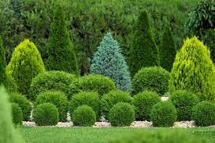
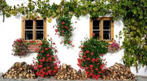
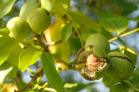

Shrubs are medium-sized, woody plants taller than herbs and shorter than a tree. Their height
usually ranges from 6m to 10m tall.Their features include bushy, hard, and woody stems with
many branches. Although stems are hard, they are flexible but not fragile.The lifespan of these
plants usually depends on the species. Rose, jasmine, lemon, tulsi, and henna are some of the
common shrubs around us.
Shrubs are any sort of woody, perpetual, thick plants that branch into a few stems or trunks at
the base and is littler than a tree.Shrubs are easy to spot, they are generally short and bushy
and one does not see a significant part of the stem. Shrubs are otherwise called bushes. Bushes
are broadly utilized for decoration.
Types and uses
Foundation Plantings
Shrubs like boxwood, dwarf Alberta spruce, and yew are often used around the foundation of
buildings to provide year-round greenery and structure to landscaping.
Privacy Screens and Hedges
Tall, dense shrubs such as arborvitae, leyland cypress, and holly are commonly planted in
rows to create privacy barriers or windbreaks.
Flower Borders
Flowering shrubs like roses, azaleas, and hydrangeas add color and fragrance to garden borders
and provide visual interest throughout the growing season.
Wildlife Habitat
Native shrubs like elderberry, serviceberry, and dogwood provide food, shelter, and nesting
sites for birds, butterflies, and other wildlife.
Erosion Control
Shrubs with deep root systems, such as viburnum and juniper, help stabilize soil on slopes and
prevent erosion.
Groundcover
Low-growing shrubs like creeping juniper, cotoneaster, and dwarf barberry are used to cover
large areas of ground and suppress weeds.
Pollinator Gardens
Shrubs with nectar-rich flowers, such as butterfly bush, potentilla, and buddleia, attract
bees, butterflies, and other pollinators to the garden.
Edible Landscaping
Fruit-bearing shrubs like blueberries, raspberries, and currants not only provide delicious
fruit but also add visual interest to the landscape.
Fragrant Gardens
Shrubs with fragrant flowers or foliage, such as lilac, mock orange, and gardenia, are often
used in sensory gardens or near outdoor seating areas to add pleasant aromas to the air.
Specimen Plants
Unique or ornamental shrubs like Japanese maples, contorted filberts, and variegated euonymus
are often used as focal points in the landscape, drawing attention and adding visual interest.

Herbs
Herbs are short-sized plants with soft, green, delicate stems without woody tissues. They complete their
life cycle within one or two seasons.Generally, they have few branches or are branchless. These can be
easily uprooted from the soil. Herbs contain enough nutritional benefits, including vitamins and minerals,
to make them a part of a healthy balanced diet. Tomato, wheat, paddy, grass and bananas are a few examples
of herbs.
Types and uses
Basil
Adds a sweet, slightly peppery flavor to dishes. Commonly used in Italian cuisine, especially in
tomato-based dishes like pasta sauces and salads.
Rosemary
Has a robust, pine-like flavor. Often used in Mediterranean cuisine, particularly with roasted meats,
potatoes,and in marinades.
Thyme
Offers a subtle, earthy flavor. Used in soups, stews, sauces, and as a seasoning for poultry, fish,
and vegetables.
Parsley
Known for its fresh, slightly peppery taste. Used as a garnish and flavor enhancer in a wide range of
dishes, including salads, soups, and sauces.
Cilantro (Coriander)
Has a bright, citrusy flavor. Commonly used in Mexican, Indian, and Southeast Asian cuisines, especially
in salsas,curries, and stir-fries.
Mint
Provides a refreshing, cooling taste. Used in both sweet and savory dishes, including salads, desserts,
cocktails, and teas.
Dill
Offers a delicate, slightly anise-like flavor. Popular in pickling, seafood dishes, salads, and as a
garnish for soups and sauces.
Sage
Has a strong, savory flavor with hints of pine and citrus. Used in stuffing, sausage, poultry dishes,
and as a seasoning for roasted vegetables.
Oregano
Provides a robust, slightly bitter taste. Commonly used in Italian, Greek, and Mexican cuisines,
particularly in pasta sauces,pizzas,and grilled meats.
Chives
Have a mild onion flavor. Often used as a garnish for salads, baked potatoes, soups, and creamy sauces.
Climbers
Climbers are much more advanced than creepers. Climbers have a very thin, long and weak stem
which cannot stand upright, but they can use external support to grow vertically and carry
their weight. These types of plants use special structures called tendrils to climb. A few
climbers’ plant names include pea plant, grapevine, sweet gourd, money plant, jasmine, runner
beans, green peas, etc.
Types and uses
Vining Climbers
These plants have long, flexible stems that twine around structures or other plants for
support. They are often used to cover fences, trellises, and pergolas, adding vertical
interest to gardens and providing privacy.
Scramblers
These climbers have stiff, arching stems that can be trained to climb or allowed to sprawl
across the ground.They are useful for covering unsightly structures or filling in gaps in
garden borders.
Twiners
These climbers have stems that wrap around supports in a helical fashion. They are excellent
for covering arbors,arches, and other vertical structures, providing shade and enhancing visual
appeal.
Clinging Climbers
These plants have specialized structures such as aerial roots or adhesive pads that allow them to
attach themselves to walls and other surfaces. They are ideal for covering masonry walls, fences,
and buildings, adding greenery to urban environments.
Climbing Roses
These are a specific type of climbing plant prized for their beautiful blooms and fragrance. They are
often trained along fences, walls, and trellises to create stunning floral displays.
Edible Climbers
Some climbing plants, such as grapevines and kiwi vines, produce edible fruits. They can be grown on
trellises or pergolas in home gardens, providing both ornamental value and a harvest of fresh produce.
Evergreen Climbers
These climbers retain their foliage year-round, providing greenery and structure to the garden even in
winter.They are useful for covering structures that need to be screened year-round or for adding green
accents to vertical spaces.

Creepers
Creepers, as the name suggests, are plants that creep on the ground. They have very fragile, long, thin
stems that can neither stand erect nor support all their weight. Examples include watermelon, strawberry,
pumpkin and sweet potatoes.
Types and uses
Ground Covers
These low-growing creepers spread horizontally and are used to cover bare ground, suppress weeds, and
prevent soil erosion. Examples include creeping thyme, vinca minor, and creeping juniper.
Climbing Creepers
These plants have trailing or vining stems that can be trained to climb up structures or other plants for
support.They are often used to cover walls, trellises, fences, and pergolas, adding greenery and softening
hardscape elements.Examples include ivy, creeping fig, and sweet potato vine.
Hanging Basket Plants
These creepers have trailing stems that cascade gracefully over the edges of containers, making them perfect
for hanging baskets, window boxes, and elevated planters. They add a cascading effect and are ideal for
adding vertical interest to patios, balconies, and porches. Examples include trailing petunias, bacopa, and
trailing lobelia.
Edible Creepers
Some creeper plants produce edible fruits or foliage, making them valuable for both ornamental and culinary
purposes.Examples include strawberries, creeping rosemary, and nasturtiums.
Indoor Creepers
These creepers are well-suited for indoor environments and can be grown in hanging baskets or allowed to
trail over shelves and furniture. They help purify indoor air and add a touch of greenery to interior
spaces.Examples include pothos, string of pearls, and spider plant.
Aromatic Creepers
Certain creepers are valued for their aromatic foliage or flowers, which can add fragrance to the garden or
indoor spaces. Examples include creeping thyme, scented geraniums, and sweet alyssum.
Wildlife Attracting Creepers
Some creepers produce flowers or fruits that attract pollinators such as bees and butterflies, as well as
birds.They contribute to biodiversity and ecosystem health in the garden. Examples include creeping phlox,
honeysuckle,and trumpet vine.
Trees
Trees are big and tall plants. They have very thick, woody and hard stems called the trunk. This single
main stem or the trunk gives rise to many branches that bear leaves, flowers and fruits. Some trees are
branchless like coconut trees; i.e., they have only one main stem which bears leaves, flowers, and fruits
all by itself. The lifespan of a tree is very long. i.e., for several years. Banyan, mango, neem, cashew,
teak and oak are some examples of trees.
Oak
Oak wood is used for furniture, flooring, cabinetry, and barrels for aging wine and spirits.
It's also used in construction and shipbuilding due to its strength and durability.
Maple
Maple wood is prized for its attractive grain patterns and is used for furniture, flooring, cabinets,
and decorative items. Maple syrup is also harvested from sugar maple trees.
Mahogany
Mahogany wood is valued for its rich color and is used in high-end furniture, musical instruments,
cabinetry,and boat building.
Walnut
Walnut wood is known for its dark color and is used in furniture making, flooring, gunstocks, and
decorative veneers.
Softwood trees
Pine
Pine wood is widely used in construction for framing, decking, paneling, and furniture. It's also used
in the production of paper and cardboard.
Spruce
Spruce wood is used for construction lumber, plywood, musical instruments (such as guitars and pianos),
and pulpwood for paper production.
Cedar
Cedar wood is naturally resistant to decay and insect damage, making it ideal for outdoor furniture, fencing,
decking, and siding. It's also used in closets and chests for its aromatic properties.
Fir
Fir wood is used for construction lumber, plywood, and as pulpwood for paper production
Fruit trees
Apple
Apple wood is used for smoking meats and for making handles, tool parts, and small decorative items.
Cherry
Cherry wood is prized for its reddish color and is used in fine furniture making, cabinetry, flooring,
and musical instruments.
Peach
Peach wood is sometimes used for smoking meats, but it's not as common as other fruit woods.
Orange and Lemon
Citrus wood is used for small woodworking projects and for making aromatic smoking chips.
Nut trees
Walnut
In addition to its use as a hardwood for furniture and other items, walnut shells are used in
abrasive blasting and as filler material.
Almond
Almond wood is sometimes used in woodworking, but it's not as common due to the small size of
almond trees and the preference for using the nuts for consumption.

Evergreen trees
Pine
In addition to its use as softwood for construction and paper production, pine resin is extracted
for use in varnishes, adhesives, and as a natural preservative.
Cypress
Cypress wood is resistant to rot and is used for outdoor applications such as fencing, decking, and siding.
It's also used in boat building and for making barrels.
Fir and Spruce
Evergreen trees like fir and spruce are primarily used for their softwood lumber in construction and
paper production.